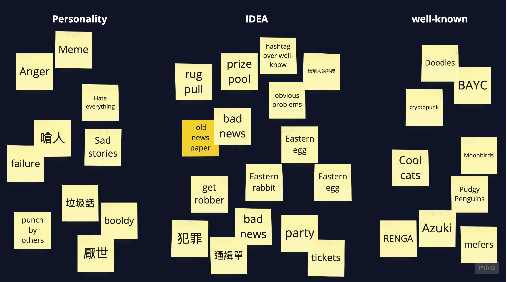
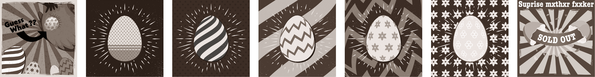

How might we give failures hope during the NFT bear market?
During the bear market, many investors opted to pause their activities to mitigate financial losses. To address this, we introduced a pool where investors could exchange their seemingly worthless NFTs with us in return for lottery tickets. The lucky winner had the opportunity to claim all the tokens.
This initiative not only added value to these seemingly valueless NFTs but also reinvigorated the market while offering a glimmer of hope to investors.
Roles
Researcher / Communication / Prototype / NFT Artist
The Web3 industry evolves rapidly, necessitating daily development meetings to ensure our project stays on course. Speed is paramount in our endeavors, and we had just a two-week window to bring this project to fruition. Upon receiving the planning report from the PM lead, I immediately delved into researching user issues and concurrently crafting the prototype. A particularly thrilling aspect was the creation of our own NFTs for this project.
Ideate
We are all victims.
We've all been manipulated by those widely recognized NFTs.
-
Secondary Research
In 2023, only 16% of investors managed to profit. Unfortunately, certain well-known NFTs engaged in 'rug-pulling,' leaving investors with assets that quickly became worthless and nearly impossible to liquidate, resulting in significant financial losses as the NFT teams absconded with the funds. -
Interview
I conducted interviews with approximately ten individuals who experienced financial losses during the bear market. Among them, one individual's situation was particularly devastating, resulting in a divorce. The common concern among these investors was feeling deceived by the promising blueprints presented by NFT teams, only to be left with virtually worthless NFTs following their investments.

NFT Arts
Create a useful app for elders.I created the 'Rugbbit' NFT using AI-generated drawings, then customized them to align with my vision. The name 'Rugbbit' draws inspiration from both the Eastern Rabbit and 'Rug Pull.' My design keywords revolved around concepts like 'rabbit,' 'anger,' '2D cartoon style,' 'flat design,' and more. I fused the chosen images into the final design.
The initial concept centered around critiquing well-known NFTs, with the 'Rugbbit' tearing off a photo of these prominent entities. Additionally, our prize pool functioned as a lottery drawing, transforming our NFTs into ticket-like assets. Investors who purchased these NFTs gained access to the prize pool game. Following the draw, the NFTs underwent a transformation, resembling a torn ticket.
Level Items Design
Feedback
Prior to launch, our tweets garnered over 100 retweets and approximately 50 comments. At that time, our Twitter following exceeded 3,000 users. The comments overwhelmingly expressed attraction to the idea and resonated with the sentiment of 'disapproving of well-known NFTs.'
Prototype